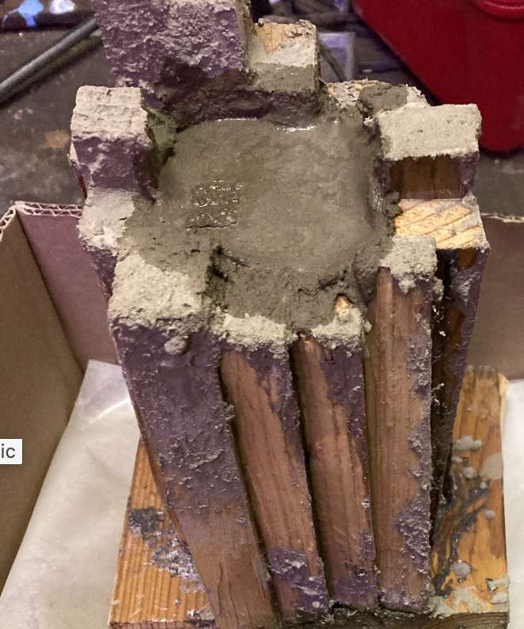
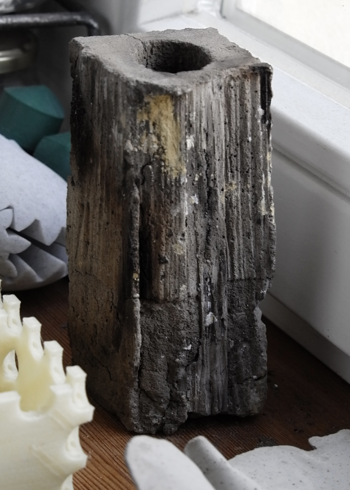
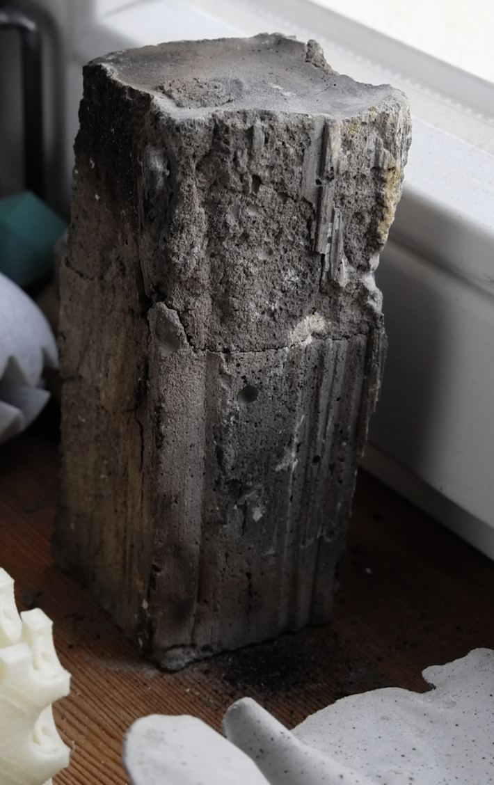
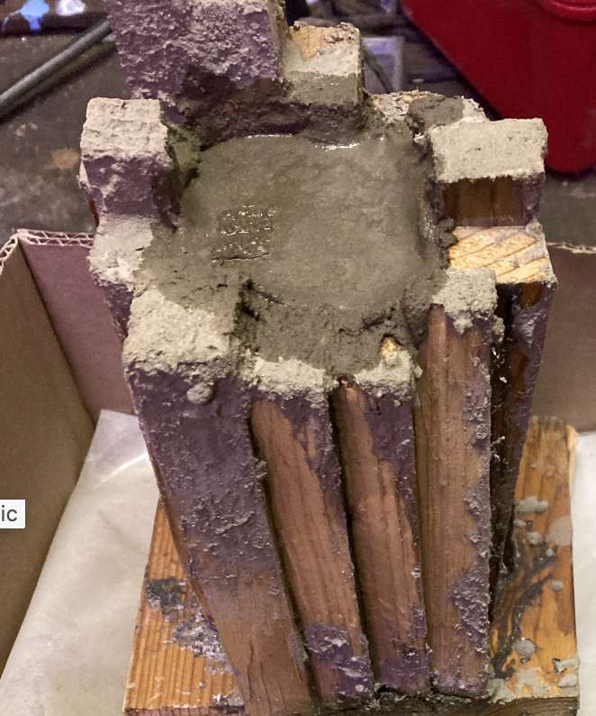
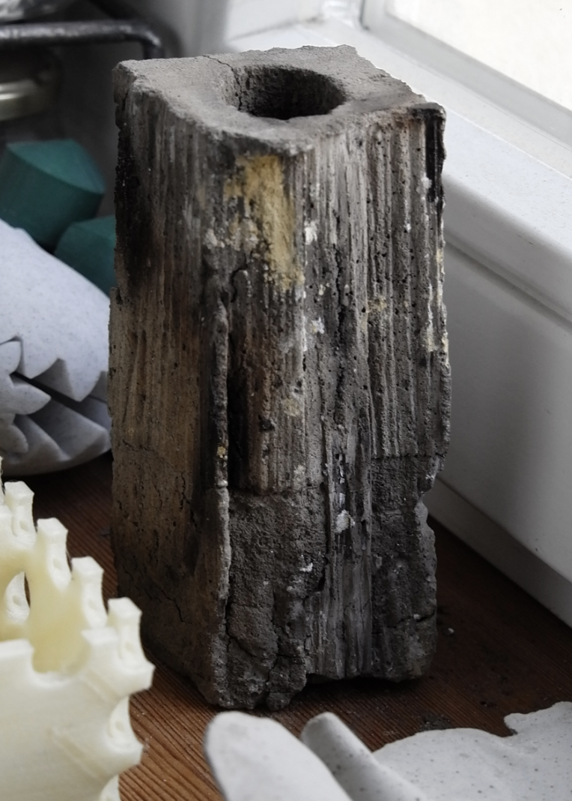
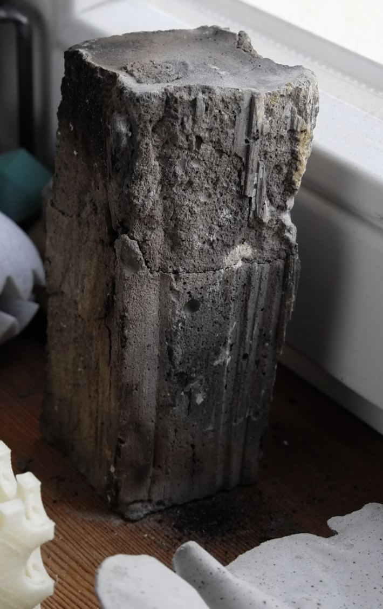

I made a concrete item in a wooden form work which was burned in the
oven after six weeks of drying for architecture school, inspired by
Peter Klaus Feldkapelle, which is highly praised in the German academic architecture scene.
Due to the incredible surface I consider it the most valuable item
from the first semesters design class.
 





Text last updated: May 1st, 2024